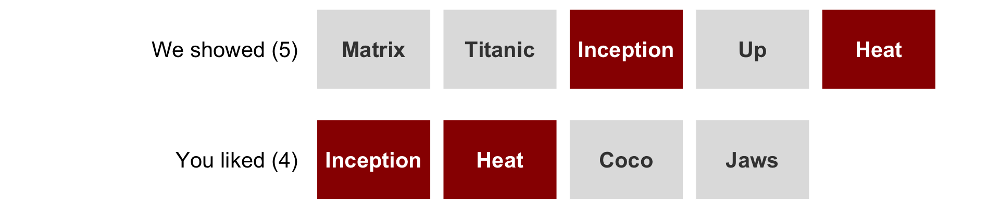
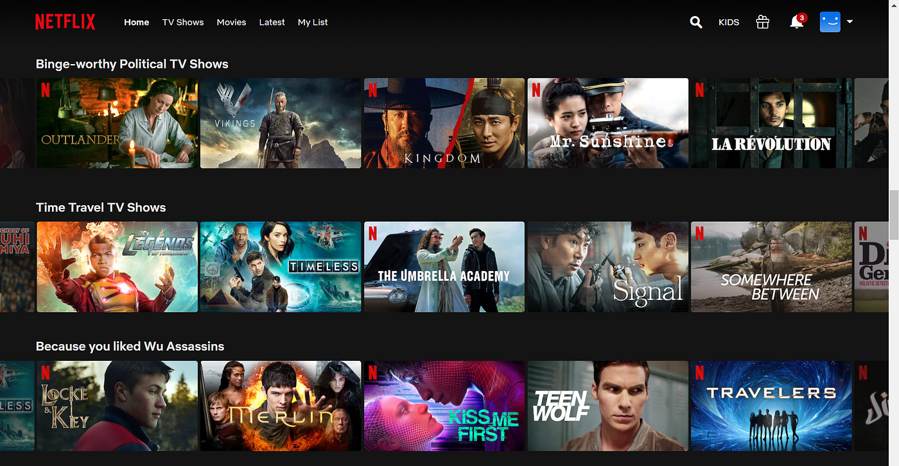
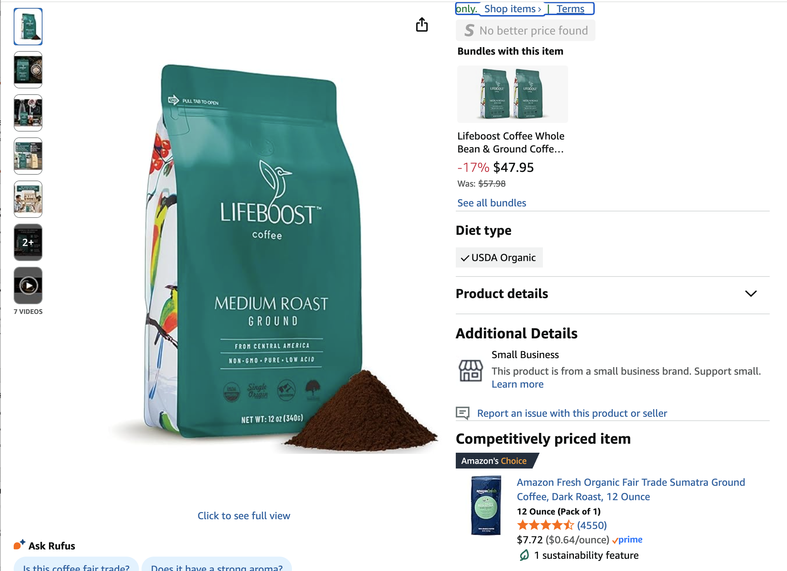
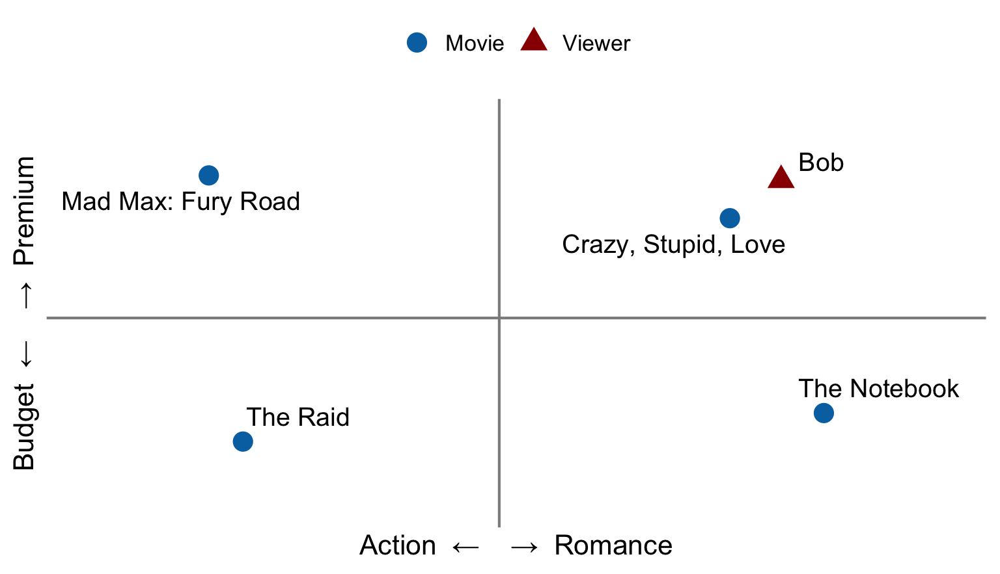
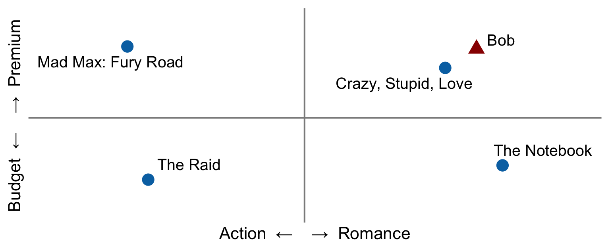
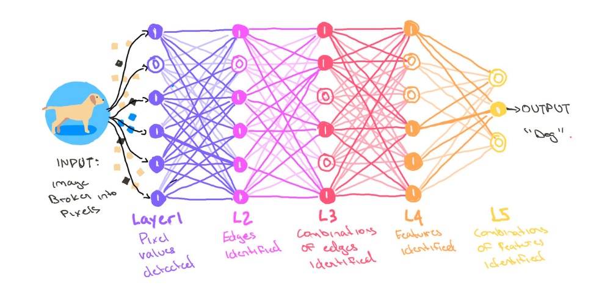
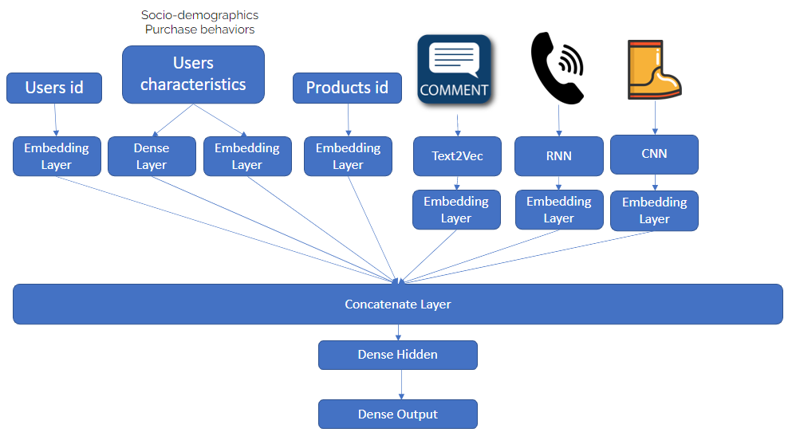

MKT 566 · Fall 2026
USC Marshall School of Business
Oct. 13 and 15, 15 minutes per group. Send your slides by Monday, Oct. 12. The plan does not need to be finished: this is where you get feedback.
| What we look at | What a good proposal does |
|---|---|
| The question | says clearly what you want to find out, and why a marketer would care |
| The data | says where your data comes from, and shows you can get it |
| The method | says how you will answer the question, with at least one tool from this class |
| The talk | clear slides, finishes on time, speaks to the room, handles questions well |
Each of the four parts gets 10, 14, 16, 18, or 25 points, from “needs improvement” to “excellent”, so the total is out of 100. The proposal counts for 15% of your group project grade.

The Netflix home screen. What is Netflix recommending, and how might it decide?

An Amazon page for a bag of coffee. On the right, Amazon suggests two things: a bundle of the same coffee, and a cheaper coffee from its own brand. Why would Amazon show you each one? Who benefits, you or Amazon?
Every recommendation is a small marketing decision, made millions of times a day: which product do we show this person, right now?
| Clustering (Tuesday) | Recommendations | |
|---|---|---|
| Goal | put similar customers in groups | guess what one customer will like |
| Result | a group name (“bargain hunters”) | a list of products, best first, for each customer |
| Who gets what | everyone in a group gets the same thing | every customer gets their own list |
| Example | a different email for each group | “because you watched…” |
Clustering sorts customers into a few big groups. Recommendations tell one customer what to try next.
| Counting | Learning | |
|---|---|---|
| Question | which products are bought together? | what will this customer like? |
| Result | rules like “bread → butter” | a score for every product, for every customer |
| Example | “frequently bought together” | “because you watched…” |
| Checked with | support, confidence, lift | how often the list is right; clicks; sales |
We start with counting, which needs nothing but a calculator. Then we move to learning, which is what people mean by machine learning.
A rule reads A → B: customers who buy A also tend to buy B. Finding these rules is called market basket analysis.
| Basket | Bread | Butter | Milk | Beer | Diapers |
|---|---|---|---|---|---|
| 1 | 1 | 1 | 0 | 0 | 0 |
| 2 | 0 | 0 | 1 | 1 | 1 |
| 3 | 1 | 0 | 1 | 0 | 0 |
| 4 | 1 | 1 | 1 | 0 | 0 |
| 5 | 0 | 0 | 0 | 1 | 1 |
1 means the product is in the basket. Which products seem to go together? How would you measure “together” with a number?
| Basket | Bread | Butter |
|---|---|---|
| 1 | 1 | 1 |
| 2 | 0 | 0 |
| 3 | 1 | 0 |
| 4 | 1 | 1 |
| 5 | 0 | 0 |
Take the rule bread → butter and count from the table:
Lift 1.67: a bread buyer is 1.67 times as likely to buy butter as a typical shopper. Lift 1: the two products have nothing to do with each other. Below 1: buying one makes the other less likely.
A store looks at 100 shopping baskets:
| What is in the basket | Baskets |
|---|---|
| Diapers and beer | 2 |
| Diapers only | 1 |
| Beer only | 38 |
| Neither | 59 |
Compute the support, confidence, and lift of diapers → beer. Would you build a promotion on it?
| Number | How to get it | Diapers → beer |
|---|---|---|
| Support | baskets with both ÷ all baskets | 2 ÷ 100 = 2% |
| Confidence | baskets with both ÷ baskets with diapers (2 + 1) | 2 ÷ 3 = 67% |
| Share with beer | baskets with beer (2 + 38) ÷ all baskets | 40 ÷ 100 = 40% |
| Lift | confidence ÷ share with beer | 67% ÷ 40% = 1.67 |
Always read the three numbers together. A big lift on a tiny support is a fun fact, not a strategy. Stores ignore rules below a minimum support.
This is Amazon’s “frequently bought together”. It needs only past baskets: no model, and nothing about the customer. Its limit: it knows what goes with what, not who you are.
You saw this on Tuesday: PCA gave every shopper two coordinates, PC1 and PC2, and we worked out what the axes meant by reading the arrows. Same idea here, learned from millions of clicks.

A made-up map with four movies and one viewer, Bob. Which movie would you recommend to Bob?

| User | The Matrix | Titanic | Toy Story | The Godfather | Inception |
|---|---|---|---|---|---|
| 1 | 1 | 0 | 1 | 0 | 1 |
| 2 | 1 | 1 | 0 | 1 | 0 |
| 3 | 0 | 1 | 1 | 0 | 0 |
| 4 | 1 | 0 | 0 | 1 | 1 |
| 5 | 0 | 1 | 0 | 1 | 1 |
1 means the user watched and liked the movie. User 1 has not seen Titanic or The Godfather. Which one would you recommend to User 1, and why?
| User | Movies in common with User 1 | Watched Titanic? | Watched The Godfather? |
|---|---|---|---|
| 2 | 1 (The Matrix) | yes | yes |
| 3 | 1 (Toy Story) | yes | no |
| 4 | 2 (The Matrix, Inception) | no | yes |
| 5 | 1 (Inception) | yes | yes |
Real systems compare you with thousands of users and use a finer measure of similarity than a simple count. The logic is the same.
Collaborative filtering needs history. No history, no one to compare with. This is called the cold start problem:
And most of the table is empty anyway. A real example: MovieLens, a movie-recommendation website run by researchers at the University of Minnesota, where users rate movies from 0.5 to 5 stars. In its public sample, 610 users rated 9,724 movies:
Source: the MovieLens “small” dataset (GroupLens, University of Minnesota), 100,836 ratings. A new dataset, used only on this slide.
| Collaborative filtering | Content-based | |
|---|---|---|
| Needs | who watched or bought what | a description of each product |
| New product | cannot recommend it | can recommend it right away |
| New customer | cannot recommend | needs a few choices first |
| Good at | surprises: “people like you liked this” | more of the same |
| Risk | popular products win | filter bubble |
Most platforms use both (hybrid): content-based for new products and new customers, collaborative once there is enough history.

Recognizing a dog: the first layer sees dots of color, the next sees edges, later layers see shapes, and the last one says “dog”.

You do not need the details: every kind of data goes in at the top, and one spot on the map comes out at the bottom.
| Test 1: on past data | Test 2: with real customers | |
|---|---|---|
| When | before any customer sees the new recommendations | after the new recommendations go live on the site |
| How | hide last month, let the system guess, compare with what customers really did | give the new system to half the customers and the old one to the other half |
| What you measure | precision and recall | clicks, sales, return visits |
| Why | cheap and fast: catches a bad system before any customer sees it | the real answer: do customers actually click and buy more? |
Run test 1 first, because it costs nothing. Run test 2 before you trust the system, because past data cannot tell you how customers will react to new suggestions.
Take one customer’s history and hide last month. The system looks only at the months before and picks 5 movies for them. Then we check what the customer actually liked last month:

The 2 matches (in red) are the movies we showed and you liked:
Two more checks: variety (does the list cover much of the catalog?) and surprise (does it ever show something less popular that people enjoy?).
Once the new system is live, split the customers at random into two groups:
Then compare the two groups on clicks (do they click on what we recommend?), sales (do they buy, book, or stream?), and return visits (do they come back?).
Example: in group A, 5 of every 100 customers click on a recommendation; in group B, 8 of every 100 do. The new system raises clicks from 5% to 8%. Because the split was random, the two groups are alike in everything except the recommender, so the difference comes from the new system. More on experiments later in the course.
Every recommender is built to maximize something. Clicks today and loyal customers next year can pull in different directions. Picking the goal is a marketing decision, not a technical one.
In small groups, talk about what Netflix’s recommender has to get right. Pick a few questions from each area:
Each group shares one or two things that surprised you and one challenge you see for Netflix. Full questions: discussion sheet.
Required reading: Netflix’s billion-dollar secret and Marketing automation: recommendation systems. Optional: Two decades of recommender systems at Amazon. Next week: fall recess, no class.
MKT 566 · Marketing Analytics